Copy-synthesis of the same held-out validation clips as the V3 demo, re-synthesized with the released V3.2 weights (
exported_models/v3_2/). V3.2X receives the mel sub-sampled to the hop-512 grid (the grid DiffSinger produces) and upsamples it back internally, exactly like the V3X column of the V3 demo. mel-L1 (mean |Δln-mel| against the ground-truth mel; lower = closer) is recomputed here for all three synthesized columns with one measurement, so the numbers are directly comparable within this page — but not to the V3 page. Note that the dropout fix is a phase/periodicity change that mel-L1 (a magnitude metric) barely sees; judge it by listening to the high notes. Architecture, model size and RTF are unchanged from V3 (see the V3 page for the efficiency tables).Copy-synthesis (NHVSing V3.2 / V3.2X vs pc-nsf-hifigan)
One validation clip per dataset, none included in the training data. Judge by listening — mel-L1 does not match perception.
| segment | Ground Truth | NHVSing V3.2 | NHVSing V3.2X | NSF-HiFiGAN |
|---|---|---|---|---|
| 1st_color_0000 | mel-L1 0.266 | 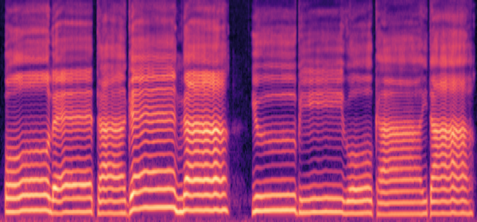 mel-L1 0.268 | 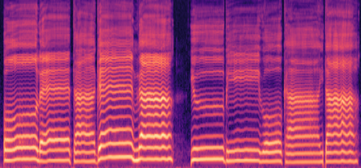 mel-L1 0.234 | |
| 20186_0000 |  | 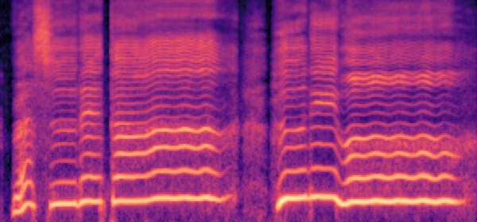 mel-L1 0.312 | 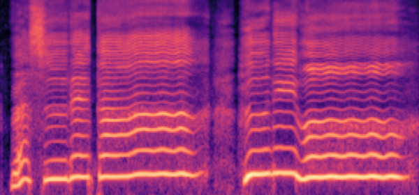 mel-L1 0.315 | 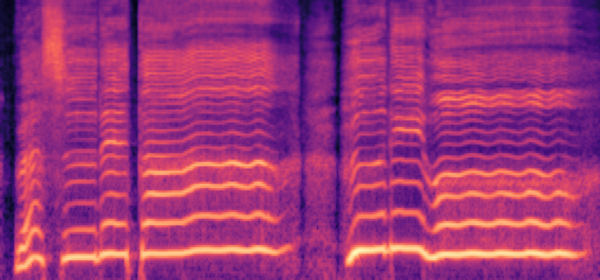 mel-L1 0.245 |
| CSD_en014b_0002 | 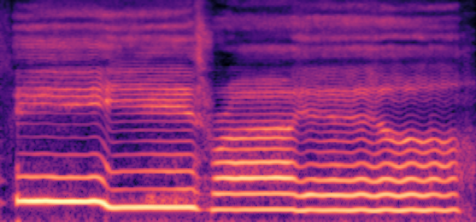 mel-L1 0.295 | mel-L1 0.296 |  mel-L1 0.236 | |
| NUS48E_sing_JTAN_15_0005 | 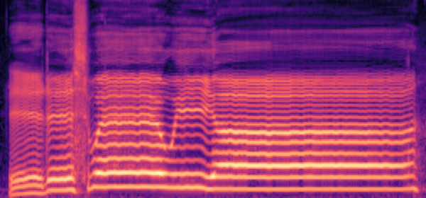 | mel-L1 0.258 | 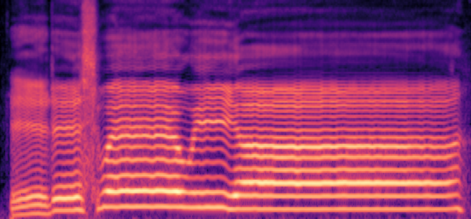 mel-L1 0.258 | 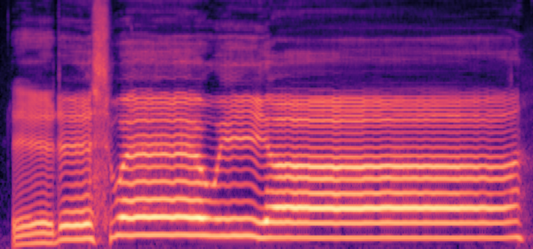 mel-L1 0.224 |
| Natsume_Singing_DB_0713_12_0006 |  | 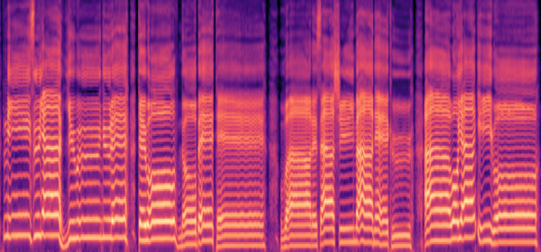 mel-L1 0.285 | mel-L1 0.287 | 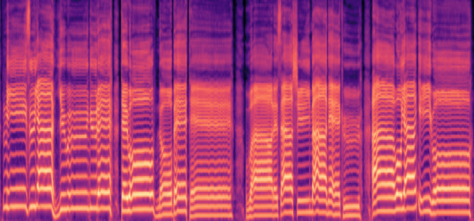 mel-L1 0.237 |
| ONIKU_KURUMI_UTAGOE_DB_hato_0000 |  | mel-L1 0.338 | 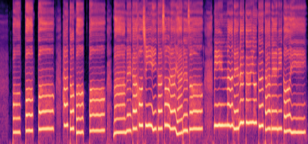 mel-L1 0.340 | 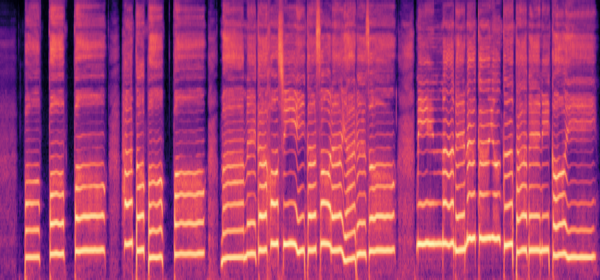 mel-L1 0.264 |
| VocalSet_f8_long_trill_o_0000 |  | mel-L1 0.261 | 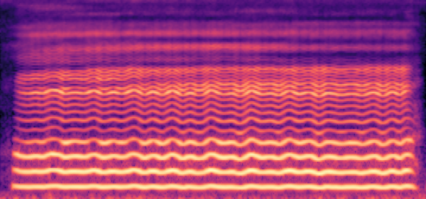 mel-L1 0.261 |  mel-L1 0.236 |
| acapella_song2_s02_0024_0000 | mel-L1 0.323 | 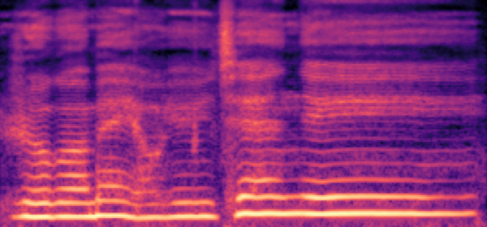 mel-L1 0.325 | 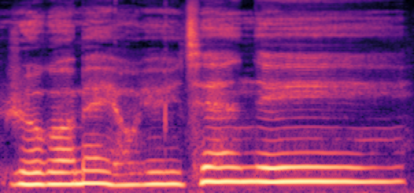 mel-L1 0.254 | |
| kiritan_singing_09_0006 | 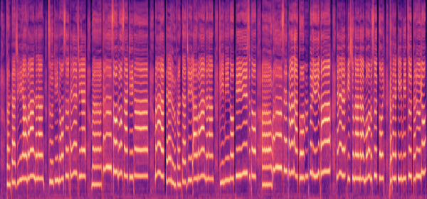 | 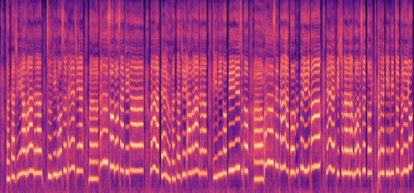 mel-L1 0.327 | 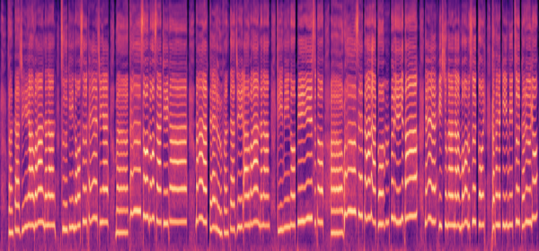 mel-L1 0.329 | 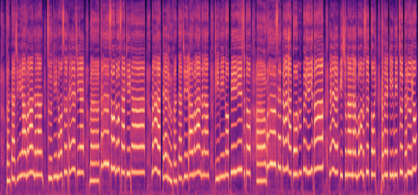 mel-L1 0.262 |
| segments_2009000333_0000 | 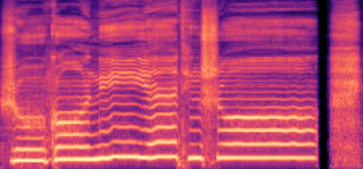 | 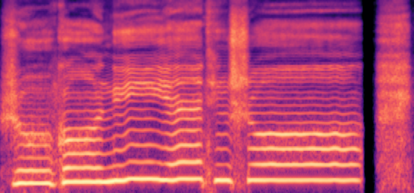 mel-L1 0.310 | mel-L1 0.311 | 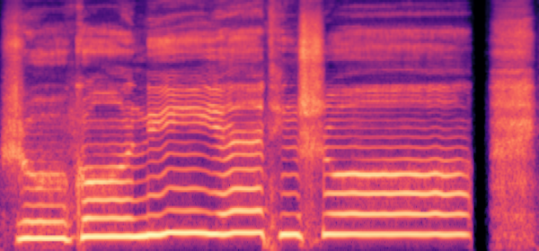 mel-L1 0.244 |
| wav_O_re_04_0003 | 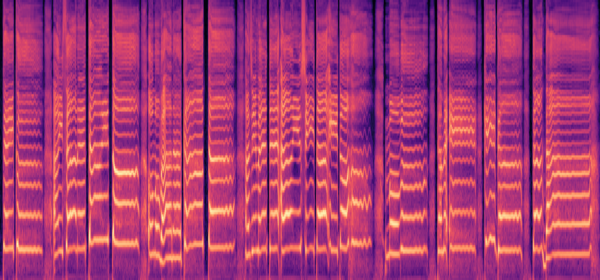 | 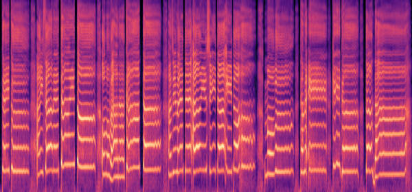 mel-L1 0.344 | 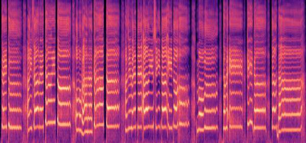 mel-L1 0.347 |  mel-L1 0.270 |